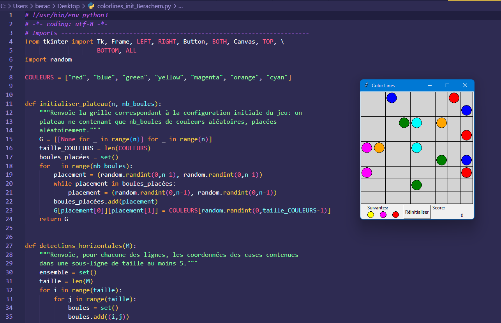
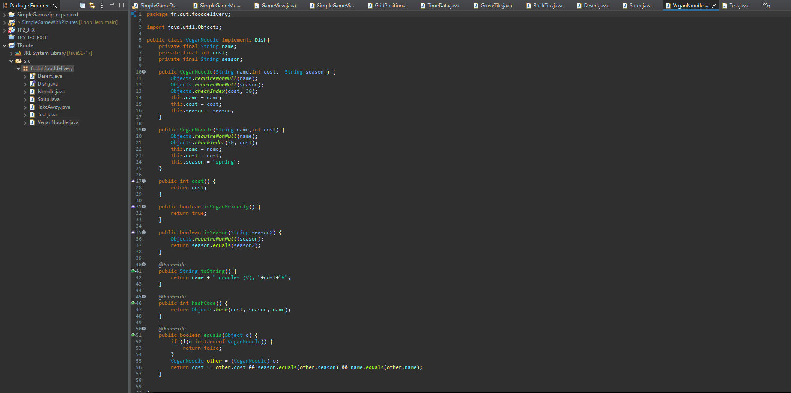

Savoirs-Faire :
Coder en Python
Coder en JAVA
Segmenter le code
Commenter son code
Savoirs-Être :
Attentif aux besoins des clients
Organisé
Méthodique
Créatif
Savoirs :
Notions d'Algorithmie
Notions de Gestion de projet
Travaux pratiques
Au semestre 1 :
Les TP étaient souvent des mini-jeux que nous devions compléter afin que tout marche ce qui fût assez divertissant et instructif :)

Au semestre 2 :
La compétence "Réalisation d'un développement d'une application" est constitué d'une matière JAVA dans laquelle
nous avions de nombreuses heures de TP.
Ces TP se faisaient sur
Eclipse et avaient des énoncés avec thème (Un jeu, une boutique de fleurs...)

Lors de ces TP, nous mettions en application nos connaissances acquises lors des cours théoriques auparavant et ils furent une réelle
aide dans la réalisation du projet...
Projet Azul 
Jeu de plateau
Avec Tristan MARTINEZ
L'un des tout premiers projets de l'année fût Azul :
vous incarnez un artisan au 16ème siècle chargé de décorer le Palais Royal de Evora, demeure somptueuse du Roi du Portugal. Pour cela, vous devrez faire parler votre fibre artiste et vos talents d'artisan afin de constituer la plus belle des mosaïques. La tâche s'annonce délicate et la concurrence sera rude. D'autres concurrents sont dans la course et ont bien d'intention de vous empêcher de remplir votre mission. Seule la plus belle fresque ornera les murs du palais. Devenez l'artisan le plus prestigieux de la royauté !
Ce projet a été réalisé en Python et nous y avons inclus une "IA" qui peut jouer de différents niveaux.
Voir sur Github
Projet Loop Hero 
Un héro bloqué dans une boucle temporelle...
Avec Laura LEROY
Le but de ce projet est de réaliser une version simplifiée du jeu Loop Hero. Il s’agit d’un jeu
pour un seul joueur où l’on est coincé dans une boucle que l’on aménage soi-même. C’est un
jeu de type rogue-like avec un peu de deck building.
Ce projet est découpé en 3 phases.
Lors de la
première phase voici à quoi ressemblait notre jeu :

Une version simplifiée du jeu
Loop Hero :
Un personnage avance sur une boucle prédéfinie.
Le joueur peut passer du mode “aventure” au mode planification en appuyant sur les touches S pour le mode planification (arrête le temps et le personnage). Avec le mode planification, le joueur peut poser des tuiles grâce aux cartes qu’il possède en main.
On doit appuyer sur la touche D pour repasser en mode aventure. Le héros dispose des effets des tuiles placées (spawn de monstres, effets direct sur les statistiques..).
Le héro enclenche un combat (ง'̀-'́)ง contre un ennemi lorsqu'il se trouve sur la même case.
Pour simuler le combat, le Hero perd des points de vie et 2 secondes correspondant à la durée du combat sont ajoutées au temps.
Les informations du jeu sont affichées sur le côté: Tour de boucle, quantité de ressources, le jour et les points de vie du héros.
Lors de la
deuxième phase, le jeu a bien évolué au niveau des fonctionnalités :

Nous avons ajouté des éléments au jeu :
Le joueur peu désormais équiper des équipments de différents niveau de raretée lors du mode plannification.
Les stats du hero, le nombre de tours de boucles et le nombre de jours, la panoplie et l'inventaire sont affiché dans la partie droite de l'écran.
lorsque le hero rencontre un monstres, un fenêtre de combat s'affiche. Ainsi nous avons du combat tour par tour avec les effets des stats appliqué (celle du monstre et du hero).
Les statistiques du montres sont affichées. De plus, une console affiche les évênements du combat au fur et à mesure qu'une action est faite.
A la fin de chaque combat, les montres peuvent faire tomber soit des cartes, soit des equipements(rareté selon les probabilité du wiki) + des ressources selon les probabilités du wiki.
Nous avons décidé de changer la structure des statistiques et d'en faire une classe commune pour le hero et les monstres.
Nous avons réutilisé les même package et classes que la phase 1 (le package equipments avait déjà été implémenté, seule certaines modification dans les classes on été apportées).